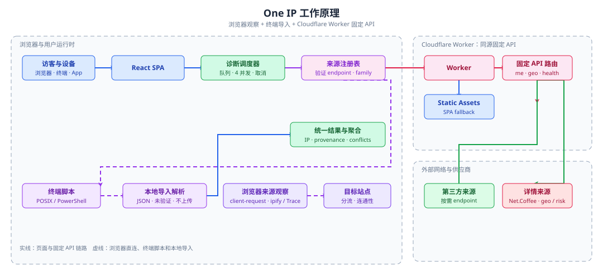

One IP 工作原理
页面选择已验证来源，经过有界调度执行浏览器观察或固定 API 查询，再把带来源和失败语义的结果交回页面。

主请求链路
src/main.tsx 挂载 React、路由、主题和 Query Provider。页面选择来源后由调度器排队执行，页面组件通过 endpoint() 调用同源 /api/*。
- 来源注册表提供稳定 ID、适配器、地址族、供应商家族和隐私说明。
- 共享调度器限制 4 个在途任务，支持取消；单来源约 3 秒、单轮有整体时限。
request()统一处理 fetch、AbortSignal、响应模式和no-store请求。- Worker 先检查 Origin、HTTP 方法和 Cloudflare Rate Limiter，再按固定路径分发。
- 处理器只访问固定上游，限制公网 IP、域名、请求体、响应大小和超时，返回
no-storeJSON。
浏览器直连观察
首页出口、网站分流、AI 连通性、DNS 和 CDN 等功能会从浏览器直接访问目标站点或已验证公共探测源。
- 记录的是目标看到的 caller egress、HTTP 响应或 DNS 观察，不是所有 App 出口的证明。
- 浏览器通用
TypeError无法可靠区分 DNS、TLS、CORS 和内容拦截，只提示可能原因。 - 默认只运行少量来源；未启用、风控和手动来源不会产生自动请求。
终端与 App 对照
终端脚本从带版本的已验证清单生成，结果以 JSON 信封导入浏览器；App 只允许用户提供手动记录。
- 导入默认只在本地解析，不上传、不自动补充地理查询，输入有大小和字段限制。
- 只有来源 ID、地址族、清单版本和 5 分钟时间窗口匹配时才显示运行时差异。
- 导入结果始终标记为用户提供、未验证，不进入浏览器来源一致性统计。
源码索引
- 入口与路由：
src/main.tsx、src/App.tsx、src/layout/routes.ts - 查询与来源：
src/lib/network.ts、src/views/home/api.ts、src/views/home/source-registry.ts - Worker：
public/worker/index.js、public/worker/http.js、public/worker/geo.js、public/worker/ip-health.js - 部署：
wrangler.toml、distStatic Assets